01 · Overview
โปรเจกต์นี้คืออะไร
CryptoClock แสดงข้อมูลแบบเต็มหน้าจอบน ESP32 พร้อมสลับ Profile → ราคาเหรียญ → CDC Action Zone → SD Slide อัตโนมัติ และตั้งค่าเครือข่ายได้จากมือถือ
02 · Benefits
ประโยชน์ของ CryptoClock
ข้อมูลราคาอัตโนมัติ
แสดงราคาจาก Bitkub บนจอเฉพาะทาง พร้อมข้อมูลสูงสุด ต่ำสุด และการเปลี่ยนแปลงราคา
ตั้งค่าได้ด้วยตัวเอง
เลือกเหรียญ เปิดหรือปิดหน้า และกำหนดช่วงเวลาแสดงผลผ่านมือถือหรือคอมพิวเตอร์
ปรับภาพให้เข้ากับแบรนด์
อัปโหลดภาพ Profile และสไลด์เพื่อใช้เป็นจอประชาสัมพันธ์ได้ทันที
03 · Learning objectives
วัตถุประสงค์การเรียนรู้
หลังจบเวิร์กชอป ผู้เรียนควรสามารถอธิบายและทดลองแก้โค้ดได้ด้วยตนเอง ไม่จำเป็นต้องจำทุกคำสั่ง
- อธิบายหน้าที่ของ
setup()และloop()ได้ - เชื่อม ESP32 เข้ากับ Wi-Fi ผ่าน WiFiManager ได้
- ดึงและอ่าน JSON จาก Bitkub Public API ได้
- อธิบาย EMA 12/26 และสถานะ BUY/SELL zone ได้
- เตรียมรูป Profile และ Slide บน SD Card ได้
- อธิบายการวน 4 หน้าหลักด้วย
millis()ได้
04 · Features
ฟีเจอร์หลัก
- เชื่อมต่อ Wi-Fi ได้สะดวกผ่าน WiFiManager
- ตั้งค่าผ่าน Local Web Settings จาก IP ของบอร์ด
- เลือกเหรียญแสดงผลได้ 4 ช่องจากคู่ THB ของ Bitkub
- เปิด/ปิดหน้าและกำหนดเวลาแสดงแต่ละหน้า
- อัปโหลด Profile และ SD Slide เป็น JPEG
- CDC Action Zone ของ BTC/THB 4H พร้อม EMA 12/26 และกราฟแท่ง
05 · Audience
เหมาะกับใคร และควรรู้อะไรมาก่อน
เหมาะสำหรับ
- นักเรียน นักศึกษา หรือ Maker มือใหม่
- ผู้ที่เคยเห็น Arduino แต่ยังแยกไฟล์ไม่คล่อง
- ผู้สอนที่ต้องการตัวอย่าง IoT จบในคาบเดียว
- ผู้พัฒนา CryptoClock ที่ต้องการเข้าใจแกนหลัก
พื้นฐานที่ช่วยให้เรียนง่ายขึ้น
- รู้จักตัวแปร ฟังก์ชัน และ array เบื้องต้น
- เคยอัปโหลด Blink ลงบอร์ด ESP32
- เคยเห็น JSON จะช่วยให้ตาม API ได้เร็วขึ้น
- ไม่จำเป็นต้องรู้ MQTT หรือ Server
06 · Hardware
อุปกรณ์ที่ต้องใช้
| อุปกรณ์ | จำนวน | หน้าที่ | สถานะ |
|---|---|---|---|
| ESP32-2432S028R | 1 | บอร์ด ESP-WROOM-32 พร้อมจอ 2.8 นิ้ว 240×320, Resistive Touch และช่อง MicroSD | จำเป็น |
| สาย USB-A → USB-C Data | 1 | จ่ายไฟ 5V และอัปโหลดโปรแกรม ต้องเป็นสายที่ส่งข้อมูลได้ ไม่ใช่สายชาร์จอย่างเดียว | จำเป็น |
| เฟรมอะคริลิก 2.8 นิ้ว | 1 ชุด | ยึดและป้องกันบอร์ด ต้องระบุว่ารองรับ ESP32-2432S028R | จำเป็น |
| คอมพิวเตอร์ | 1 | ใช้ Arduino IDE และเชื่อมต่อบอร์ด | จำเป็น |
| Wi-Fi 2.4 GHz | 1 เครือข่าย | ใช้ทดสอบ WiFiManager; ESP32 ส่วนใหญ่ไม่รองรับ 5 GHz | จำเป็น |
| MicroSD แบบ FAT32 | 1 | เก็บ profile.jpg และภาพสไลด์ขนาด 320×240 ในช่อง TF บนบอร์ด | จำเป็น |
ภาพอุปกรณ์และส่วนประกอบ

ESP32-2432S028R
บอร์ดและจอรวมเป็นชุดเดียว เหมาะกับงาน HMI และโปรเจกต์ IoT ที่ต้องการจอแสดงผล
ภาพ: ArtronShop

ส่วนประกอบบนบอร์ด
ESP-WROOM-32, ช่อง TF/MicroSD, RGB LED, BOOT, RESET, ลำโพง และช่องต่ออุปกรณ์ภายนอก
ภาพ: ArtronShop · ภาพผังเป็น revision เก่าที่ติดป้าย Micro-USB

สาย USB-A → USB-C Data
ใช้ทั้งจ่ายไฟและ Upload โค้ด ตรวจให้แน่ใจว่าเป็นสาย Data เพราะสายชาร์จอย่างเดียวจะไม่แสดง Port
ภาพตัวอย่าง: HEM France
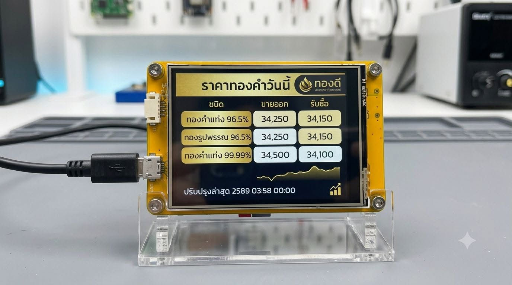
เฟรมอะคริลิก
ใช้เฟรมอะคริลิกใสทรงตั้ง ฐานกว้าง มีเสาค้ำด้านข้างและสกรู 4 มุมตามรูปอ้างอิงนี้
07 · Software
ซอฟต์แวร์และไลบรารี
Arduino IDE
โปรแกรมสำหรับเปิด แก้ Compile และ Upload โค้ดลง ESP32 พร้อมติดตั้ง ESP32 Board Package
WiFiManager
สร้างหน้าเลือก Wi-Fi อัตโนมัติเมื่ออุปกรณ์ยังไม่มีข้อมูลเครือข่ายที่บันทึกไว้
TFT_eSPI
ไลบรารีวาดข้อความ เส้น กรอบ และสีบนจอ TFT ต้องตั้งค่า Driver และ Pin ให้ตรงกับฮาร์ดแวร์
ArduinoJson
อ่านค่า last, high_24_hr, low_24_hr และชุด OHLC จาก JSON ของ Bitkub
JPEGDecoder
ถอดรหัสไฟล์ profile.jpg และ slide1.jpg จาก SD Card แล้วส่งพิกเซลไปยัง TFT_eSPI
HTTPClient + SD
มาพร้อม ESP32 core ใช้เรียก HTTPS API และอ่านไฟล์จาก SD Card
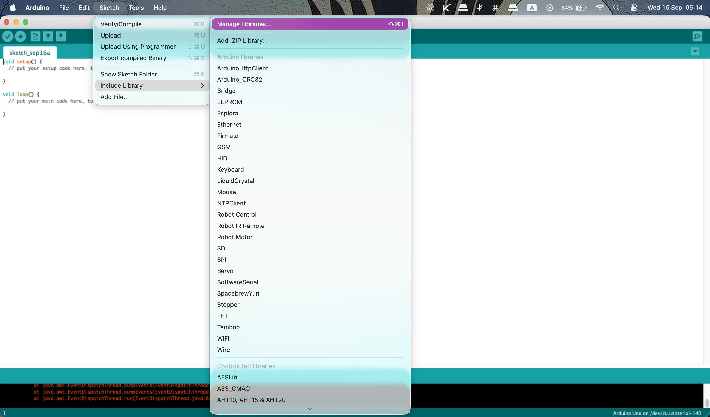
08 · How it works
โปรแกรมทำงานอย่างไร
เริ่มจอและ SD Card
setup() เริ่ม TFT จากนั้นตรวจ SD Card และนับไฟล์ /slides/slide1.jpg ถึง slide8.jpg
เชื่อมต่อ Wi-Fi
autoConnect() ใช้ Wi-Fi ที่เคยบันทึกไว้ หากยังไม่มีจะแสดงหน้าต่อ Wi-Fi และเปิด CryptoClock-Setup
ดึงราคาจาก Bitkub
เรียก Ticker V3 แยกตามคู่ BTC_THB, ETH_THB, KUB_THB และ USDT_THB แล้วเก็บข้อมูลลง Coin
วน 4 หน้าหลัก
enterPage() และ updatePageSequence() คุม Profile → Coin → CDC → SD Slide ด้วย millis()
คำนวณ CDC Action Zone
อ่าน OHLC BTC/THB ระยะ 4 ชั่วโมง 60 แท่ง คำนวณ EMA 12 และ EMA 26; เส้นเร็วอยู่เหนือเส้นช้าคือ BUY zone มิฉะนั้นเป็น SELL zone
หน้าต่อ Wi-Fi (แสดงเมื่อต้องตั้งค่า)
↓
Profile → Coin: BTC → ETH → KUB → USDT → CDC Action Zone → SD Slides
↑ ↓
└──────────────────── วนกลับหน้าแรก ─────────────────────────┘09 · Why Verify? · 30 Minutes
ทำไมต้องตรวจสอบข้อมูลก่อนเชื่อราคา
BitClock เป็นหน้าจอแสดงผล ไม่ใช่แหล่งข้อมูลราคาเอง ผู้เรียนจึงควรรู้เส้นทางของข้อมูล และตรวจสอบว่าเลขที่เห็นตรงกับข้อมูลจากต้นทางในเวลาเดียวกัน
ดูต้นทาง
โปรเจกต์เรียก Bitkub Public API ผ่านคู่ตลาด เช่น BTC_THB โดยไม่ต้องใช้ API Key
ดูเวลา
ราคาเปลี่ยนตลอดเวลา จึงต้องเทียบในช่วงเวลาเดียวกัน และรู้ว่าการเชื่อมต่อ Wi‑Fi อาจทำให้ข้อมูลมาช้าได้
ดูความสมเหตุสมผล
หากตัวเลขไม่ตรง ให้ตรวจ Wi‑Fi, HTTP response และชื่อคู่ตลาดก่อนสรุปว่าจอหรือ API ผิดพลาด
กิจกรรม: API → JSON → Serial Monitor → จอ
- เปิด Serial Monitor ที่ 115200 baud
- ดูสถานะการดึงราคาและชื่อคู่ตลาด
- เปิดหน้า Bitkub ของคู่เดียวกันบนมือถือหรือคอมพิวเตอร์
- เทียบราคาและเวลา แล้วบันทึกผลว่าตรงหรือแตกต่างเพราะอะไร
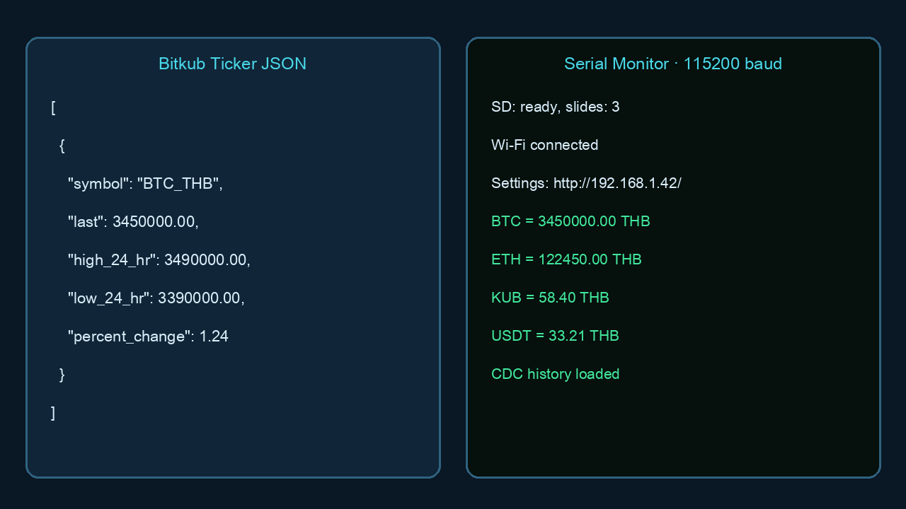
ตัวอย่างการตามข้อมูลจาก API ถึงหน้าจอ
09 · Security basics · 20 Minutes
ความปลอดภัยสำหรับ CryptoClock
CryptoClock ใช้ข้อมูลราคาแบบสาธารณะ แต่ยังต้องดูแล Wi‑Fi, หน้า Local Settings, SD Card และแหล่งจ่ายไฟอย่างถูกต้อง หัวข้อนี้ช่วยให้ผู้เรียนรู้ว่าอะไรควรทำตั้งแต่วันแรก
Wi‑Fi และ Local Settings
- ตั้งรหัสผ่าน Wi‑Fi ที่คาดเดายาก และไม่แชร์กับผู้ที่ไม่เกี่ยวข้อง
- เปิดหน้า Local Settings เฉพาะบน Wi‑Fi ที่เชื่อถือได้
- ไม่เผยแพร่ IP ของบอร์ดหรือเปิด Port ไปยัง Internet
- ตั้งค่าเสร็จแล้วให้ปิด Hotspot
CryptoClock-Setupด้วยการเชื่อมต่อ Wi‑Fi ปกติให้สำเร็จ
Bitkub API และข้อมูล
- โปรเจกต์นี้ใช้ Bitkub Public API สำหรับราคาสาธารณะ จึงไม่ต้องใช้ API Key
- ห้ามใส่ API Key, Seed Phrase, รหัสผ่าน หรือข้อมูลกระเป๋าเงินลงในโค้ดหรือ SD Card
- ตรวจชื่อโดเมน API ทุกครั้งก่อนแก้โค้ด และอย่าใช้ URL ที่ไม่รู้จัก
- ข้อมูล CDC เป็นตัวอย่างการศึกษา ไม่ใช่คำสั่งซื้อหรือคำแนะนำลงทุน
SD Card และไฟล์รูป
- ใช้ SD Card ที่เตรียมสำหรับโปรเจกต์ ไม่ใช้การ์ดที่มีข้อมูลส่วนตัว
- อัปโหลดเฉพาะไฟล์ JPEG ที่ตรวจสอบแหล่งที่มาแล้ว
- สำรองรูปและการตั้งค่าก่อนฟอร์แมตหรือเปลี่ยนการ์ด
- ถอด SD Card หลังตัดไฟหรือหยุดการเขียนไฟล์แล้วเท่านั้น
ไฟเลี้ยงและฮาร์ดแวร์
- ใช้อะแดปเตอร์ USB 5V / 2A คุณภาพดี
- ห้ามใช้แหล่งจ่ายไฟแรงดันเกิน 5V กับพอร์ต USB‑C
- ตรวจสาย USB‑C ว่าไม่ชำรุดและไม่ร้อนผิดปกติ
- วางบอร์ดในเฟรมอะคริลิกเพื่อป้องกันการลัดวงจรจากพื้นผิวโลหะ
ทำไมในโค้ดจึงมี client.setInsecure()?
ตัวอย่างเรียนใช้คำสั่งนี้เพื่อให้ ESP32 เรียก HTTPS ได้ง่ายโดยไม่ต้องติดตั้ง Root CA certificate แต่ในการใช้งานจริงควรตรวจสอบใบรับรอง TLS ของ Bitkub ด้วย Root CA ที่ถูกต้อง เพื่อป้องกันการเชื่อมต่อกับปลายทางปลอม
Wi‑Fi Hygiene · 20 Minutes
แยกเครือข่ายและตั้งค่าอย่างปลอดภัย
การตั้งค่าและการแสดงราคาทำงานได้บน Wi‑Fi เดียวกัน แต่ไม่ควรเปิดหน้า Local Settings ออกสู่ Internet หรือใช้เครือข่ายเดียวกับอุปกรณ์สำคัญโดยไม่จำเป็น
Internet → Router / IoT Wi‑Fi → CryptoClock
└──────────→ มือถือผู้ดูแล (เปิด Local IP เฉพาะในวงเดียวกัน)
ไม่ควร: Internet → Port Forward → Local Settings ของ CryptoClockก่อนเชื่อมต่อ
- เลือก Wi‑Fi 2.4 GHz ที่เชื่อถือได้
- ใช้รหัสผ่านที่เดายาก
- ให้มือถือและบอร์ดอยู่เครือข่ายเดียวกันเฉพาะตอนตั้งค่า
หลังตั้งค่า
- ไม่เปิด Port Forward ไปที่บอร์ด
- ไม่บันทึกรหัสผ่าน Wi‑Fi ในรูปหรือเอกสารที่แชร์
- ตรวจว่าหน้า Local Settings เปิดได้เฉพาะภายในวง Wi‑Fi
10 · System map
Block Diagram และ Flowchart
Block Diagram
ภาพรวมการเชื่อมต่อของอุปกรณ์และข้อมูล
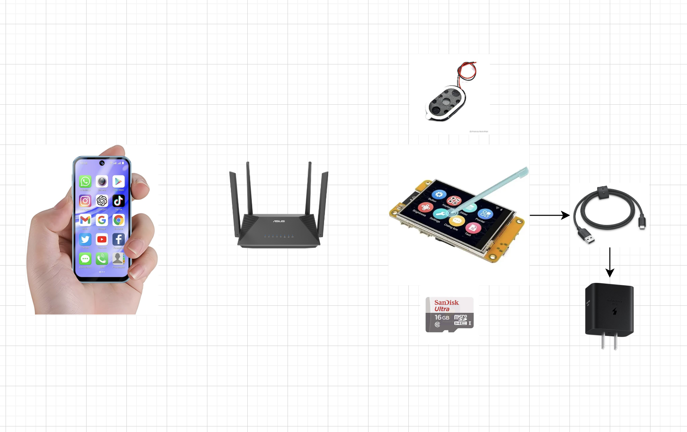
Flowchart การทำงาน
ลำดับที่บอร์ดทำงานตั้งแต่เปิดไฟจนแสดงผล
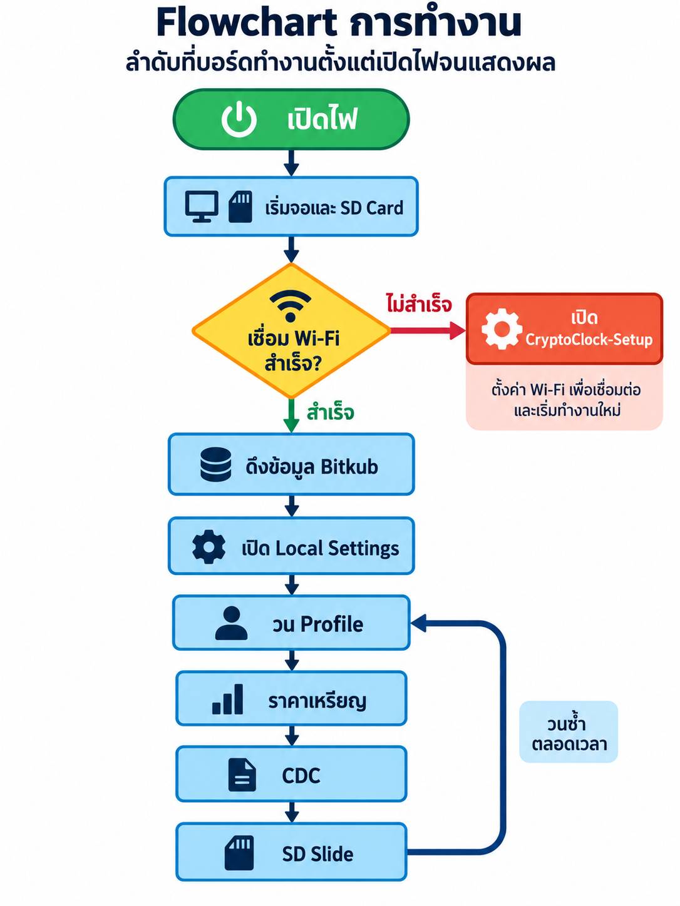
11 · Code guide
อธิบายโค้ดแต่ละส่วน
ให้เริ่มอ่านจากหน้าที่ของแต่ละไฟล์ก่อน ไม่จำเป็นต้องเข้าใจทุกบรรทัดในครั้งแรก
CryptoClock_Learning.ino · ศูนย์กลางของโปรแกรม
เริ่มจอ TFT, SD Card และ Wi-Fi จากนั้นเปิด Local Settings, เรียกข้อมูลราคา และสั่งให้หน้าจอวนตามลำดับที่กำหนด
AppConfig.h · ค่าที่ตั้งไว้ล่วงหน้า
รวม Pin ของบอร์ด, เวลาแสดงแต่ละหน้า, ขนาดภาพ และค่าที่ใช้คำนวณ CDC เพื่อแก้ไขง่ายโดยไม่ต้องค้นหาหลายไฟล์
CoinData.h / CoinData.cpp · รายชื่อเหรียญ
เก็บชื่อเหรียญ, คู่ตลาด Bitkub, สี และข้อมูลราคาที่จะส่งไปแสดงบนหน้าจอ
BitkubApi.h / BitkubApi.cpp · ดึงข้อมูลราคา
เชื่อมต่อ Bitkub Public API, อ่าน JSON แล้วแปลงเป็นราคา, จุดสูงสุด/ต่ำสุด 24 ชั่วโมง และข้อมูลกราฟ CDC
Pages.h / Pages.cpp · วาดหน้าจอ
กำหนดตำแหน่งข้อความ, ราคา, กราฟ และรูปภาพสำหรับหน้า Profile, ราคาเหรียญ, CDC, SD Slide และ Wi-Fi Setup
JpegHelper.h / JpegHelper.cpp · แสดงรูปจาก SD Card
อ่านไฟล์ JPEG เป็นส่วนย่อยแล้วส่งไปยังจอ TFT เพื่อแสดง Profile และ Slide โดยไม่ใช้หน่วยความจำมากเกินไป
12 · Code tour
รู้จักไฟล์สำคัญของโปรเจกต์
CryptoClock_Learning.inoจุดเริ่มระบบ มี WiFiManager, state ของ 4 หน้าหลัก, timer, การรีเฟรชราคา และการกลับมาเชื่อม Wi-Fi
AppConfig.hจุดรวมค่าที่ผู้สอนแก้บ่อย: ขา SD, ระยะเวลาแต่ละหน้า, Profile, จำนวนภาพ และค่า CDC
CoinData.h / .cppรูปแบบข้อมูลและรายชื่อ 4 คู่เหรียญ Bitkub: BTC_THB, ETH_THB, KUB_THB และ USDT_THB
BitkubApi.h / .cppเรียก Ticker V3 และ TradingView History, อ่าน JSON และคำนวณ EMA สำหรับ CDC Action Zone
Pages.h / .cppวาดหน้าต่อ Wi-Fi, Profile, ราคาเหรียญ, CDC และ SD Slide
JpegHelper.h / .cppอ่าน JPEG จาก SD Card ทีละบล็อกและส่งภาพไปยังจอ TFT
// หัวใจของลำดับ 4 หน้าหลัก
Profile → Coin (วน 4 เหรียญ) → CDC → SD Slide → Profile
// ราคารีเฟรชทุก 60 วินาที
if (millis() - lastPriceUpdateAt >= PRICE_REFRESH_MS) {
fetchAllBitkubTickers();
}13 · Local Web Settings
ตั้งค่าผ่าน Local IP ของบอร์ด
เมื่อ ESP32 ต่อ Wi-Fi สำเร็จ จะเปิดหน้า Settings ในเครือข่ายเดียวกันที่ http://IP-ของบอร์ด/ ตัวอย่างเช่น http://192.168.1.42/ ไม่ต้องต่อ Internet เพื่อเปิดหน้าตั้งค่า แต่ต้องมี Internet เมื่อดึงราคาจาก Bitkub
หา IP
ดูบรรทัด Settings: http://... ใน Serial Monitor หรือดูจากหน้าจอหลังต่อ Wi-Fi สำเร็จ
เปิดบนมือถือ/คอม
ให้อุปกรณ์อยู่ Wi-Fi เดียวกับบอร์ด แล้วพิมพ์ IP ลงเบราว์เซอร์
บันทึก
กดบันทึกแล้วการตั้งค่าถูกเก็บใน ESP32 และใช้ต่อหลังรีสตาร์ต
สิ่งที่ตั้งค่าได้
- เลือกเหรียญ 4 ช่อง: BTC, ETH, KUB, USDT, SOL, XRP, ADA หรือ DOGE
- เปิด/ปิด Profile, ราคาเหรียญ, CDC และ SD Slide
- กำหนดเวลาหน้า Profile, CDC และ Slide รวมถึงเวลาต่อเหรียญ (3–60 วินาที)
- อัปโหลด ดูรายการ และลบ
/profile.jpgและ/slides/slide1.jpgถึงslide8.jpg
เลือกเหรียญ

อัปโหลดรูปและข้อมูล Profile

ภาพอ้างอิงการตั้งค่า: CryptoClock Basic Manual
14 · Afternoon · 3 Hours
ภาคปฏิบัติช่วงบ่าย · 13:00–16:00 น.
กดแต่ละช่วงเพื่อดูขั้นตอนย่อย ผู้เรียนทำตามลำดับนี้จนได้บอร์ดที่ใช้งานจริงหนึ่งชุด
13:00–13:151. ตรวจอุปกรณ์และประกอบชุด CryptoClock
Checklist ก่อนเปิดไฟ — ติ๊กให้ครบทีละข้อ
- ต่อบอร์ด ESP32 เข้าคอมพิวเตอร์ด้วยสาย USB Type-C ที่ส่งข้อมูลได้
- ใส่ MicroSD Card ที่ฟอร์แมต FAT32 แล้ว
- ตรวจว่าบอร์ดมีไฟและคอมพิวเตอร์เห็น USB Port ใหม่
- สร้างโฟลเดอร์สำหรับเก็บรูป Profile และ Slide ของตนเอง
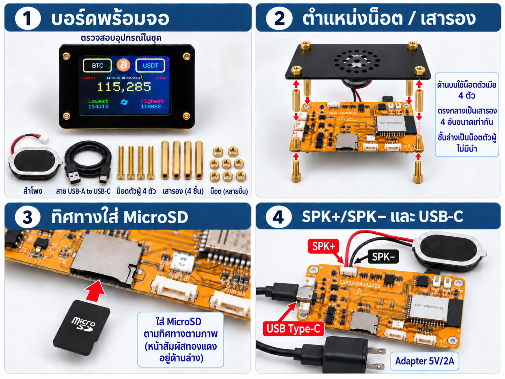
13:15–13:402. ตั้งค่า Arduino IDE และไลบรารี
- เปิด Arduino IDE และติดตั้ง ESP32 board package จาก Board Manager หากยังไม่มี
- เปิด Library Manager แล้วติดตั้ง
WiFiManager,TFT_eSPI,ArduinoJsonและJPEGDecoder - เปิดโฟลเดอร์
CryptoClock_Learningแล้วเปิดไฟล์CryptoClock_Learning.ino - เลือก Board เป็น ESP32 Dev Module และเลือก Port ที่ตรงกับบอร์ด
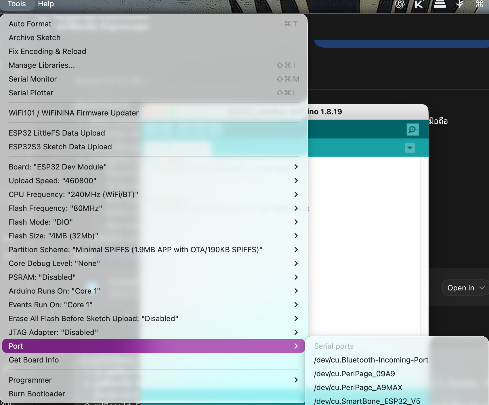
13:40–14:103. Compile และ Upload ลงบอร์ด
- กดปุ่ม Verify เพื่อตรวจว่าโค้ด Compile ผ่าน
- กดปุ่ม Upload แล้วรอจนขึ้นข้อความยืนยันการอัปโหลดสำเร็จ
- หากค้างที่
Connecting...ให้กดปุ่ม BOOT ค้างไว้ช่วงเริ่ม Upload แล้วปล่อยเมื่อเริ่มเขียนข้อมูล - เปิด Serial Monitor ที่ 115200 baud เพื่อดูสถานะ SD Card และ Wi-Fi
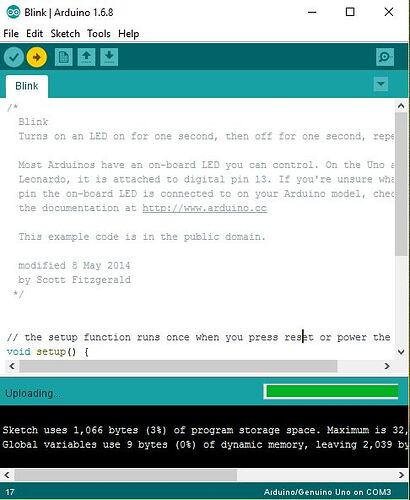
14:10–14:354. เชื่อม Wi-Fi และตรวจราคาจริง
- ใช้มือถือค้นหา Wi-Fi ชื่อ
CryptoClock-Setupแล้วเชื่อมต่อ - หน้า WiFiManager จะเปิดเอง; หากไม่เปิด ให้เข้า
192.168.4.1ในเบราว์เซอร์ - เลือก Wi-Fi 2.4 GHz ของสถานที่ ใส่รหัสผ่าน แล้วกดบันทึก
- รอให้บอร์ดรีสตาร์ต จากนั้นดูว่าจอเริ่มแสดงราคาเหรียญจาก Bitkub

ภาพอ้างอิง: CryptoClock Basic Manual
14:35–15:055. ใช้ Local IP ตั้งค่าหน้าจอ
- ดูบรรทัด
Settings: http://...ใน Serial Monitor เพื่อหา IP ของบอร์ด - ให้มือถืออยู่ Wi-Fi เดียวกับบอร์ด แล้วเปิด IP นี้ในเบราว์เซอร์
- เลือกเหรียญทั้ง 4 ช่อง เปิดหรือปิดหน้าที่ต้องการ และกำหนดเวลาแสดงผล
- กดบันทึก แล้วตรวจว่าหน้าจอเปลี่ยนตามการตั้งค่า
ภาพอ้างอิง: CryptoClock Basic Manual
15:05–15:356. อัปโหลดรูป Profile และ SD Slide
- เตรียม Profile เป็น JPEG ขนาด 96×96 px และ Slide เป็น JPEG ขนาด 320×240 px
- ในหน้า Local Settings เลือกตำแหน่ง Profile หรือ Slide ที่ต้องการ
- เลือกไฟล์ JPEG แล้วกดอัปโหลด รอให้หน้าเว็บกลับมาที่ Settings
- ตรวจภาพ Profile และ SD Slide บนจอจริง; หากภาพไม่ขึ้นให้ใช้ JPEG แบบมาตรฐาน ไม่ใช่ Progressive JPEG
ภาพอ้างอิง: CryptoClock Basic Manual
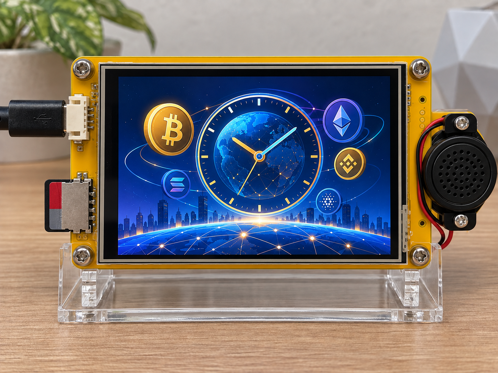
15:35–16:007. ตรวจผลงานและสรุป
- ตรวจว่าบอร์ดต่อ Wi-Fi และดึงราคา Bitkub ได้
- ตรวจการวนหน้า Profile, ราคาเหรียญ, CDC และ SD Slide ตามการตั้งค่าของผู้เรียน
- เปิด Local IP ซ้ำเพื่อยืนยันว่าการตั้งค่ายังอยู่
- ถ่ายภาพผลงานของแต่ละคนเพื่อใช้สรุปกิจกรรม
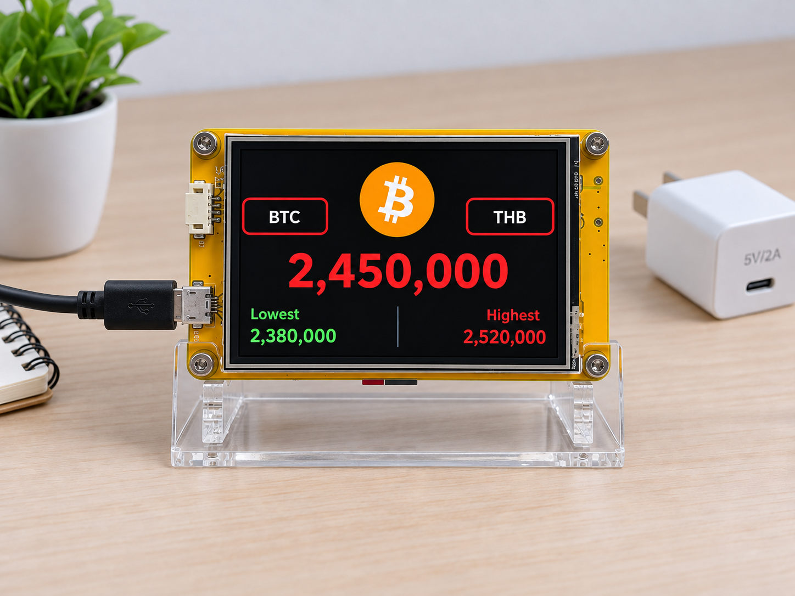
Workshop outcome
สิ่งที่ผู้เรียนได้กลับไป
ผลงานและไฟล์
- BitClock ที่ประกอบและตั้งค่าด้วยตัวเอง
- โค้ด CryptoClock พร้อมอัปโหลดซ้ำได้
- คู่มือ Local Settings และโครงสร้างไฟล์ SD Card
- ความเข้าใจพื้นฐานเรื่อง Hardware, Price Data และ Network
กรอบคิดที่ใช้ต่อได้
- ตรวจต้นทางและเวลาของข้อมูลก่อนเชื่อราคา
- ตั้งคำถามกับอุปกรณ์ IoT ที่ต่อ Wi‑Fi ได้
- แยกเครือข่ายและไม่เปิดหน้า Settings สู่ Internet
- แก้ปัญหาเบื้องต้นด้วย Serial Monitor และ checklist
ตรวจรับงานก่อนกลับบ้าน
Screen Preview
ตัวอย่างหน้าจอการแสดงผล
CryptoClock แสดงข้อมูลและภาพแบบเต็มหน้าจอที่ความละเอียด 320 × 240 px พร้อมโลโก้เหรียญและรูปแบบการแสดงผลที่ชัดเจน
หน้าจอหลักของ CryptoClock
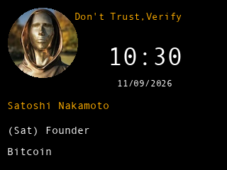
Profile
แสดงข้อมูลและภาพที่ปรับให้เข้ากับแบรนด์
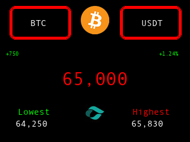
ราคา BTC
ราคาอยู่กึ่งกลางจอ พร้อมข้อมูลสูงสุดและต่ำสุด
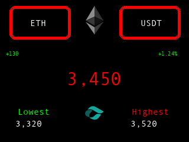
ราคา ETH
สลับแสดงเหรียญที่เลือกได้อัตโนมัติ
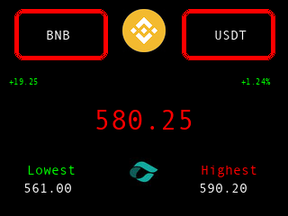
ราคา BNB
ใช้โลโก้เหรียญจริงเพื่อการมองเห็นที่ชัดเจน
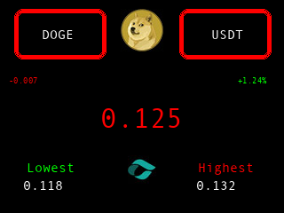
ราคา DOGE
รองรับการแสดงผลหลายเหรียญ
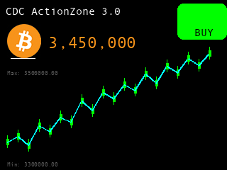
CDC Action Zone
แสดงกราฟ BTC/THB และสถานะ BUY/SELL
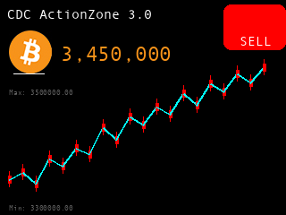
CDC SELL
แสดงสถานะตามข้อมูลราคาล่าสุด
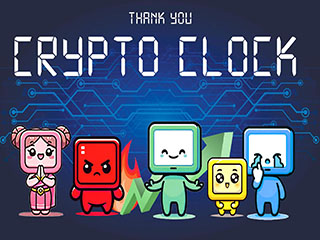
SD Slide
แสดงภาพประชาสัมพันธ์แบบเต็มจอ
ภาพประกอบการใช้งาน
CryptoClock หน้าราคาเหรียญในเฟรมอะคริลิกใส
ผังการเชื่อมต่ออุปกรณ์และข้อมูล
ตั้งค่า Wi-Fi ผ่านหน้า Config
ติดตั้งไลบรารีที่จำเป็นใน Arduino IDE
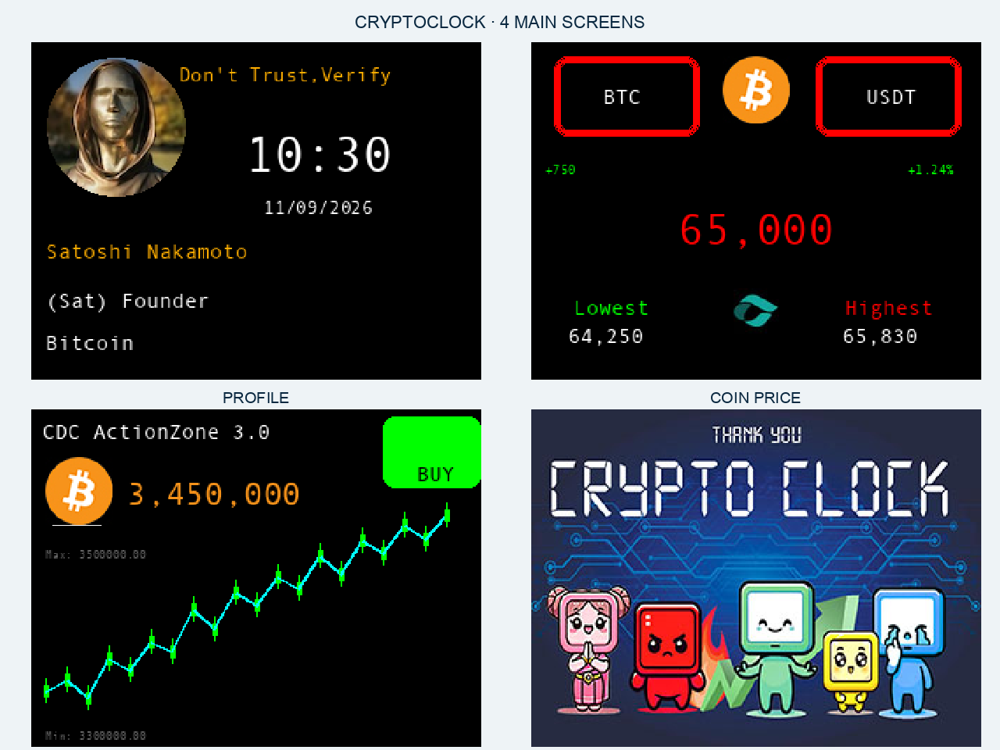
Profile, ราคาเหรียญ, CDC และ SD Slide
เส้นทางข้อมูลจาก Bitkub API สู่บอร์ด
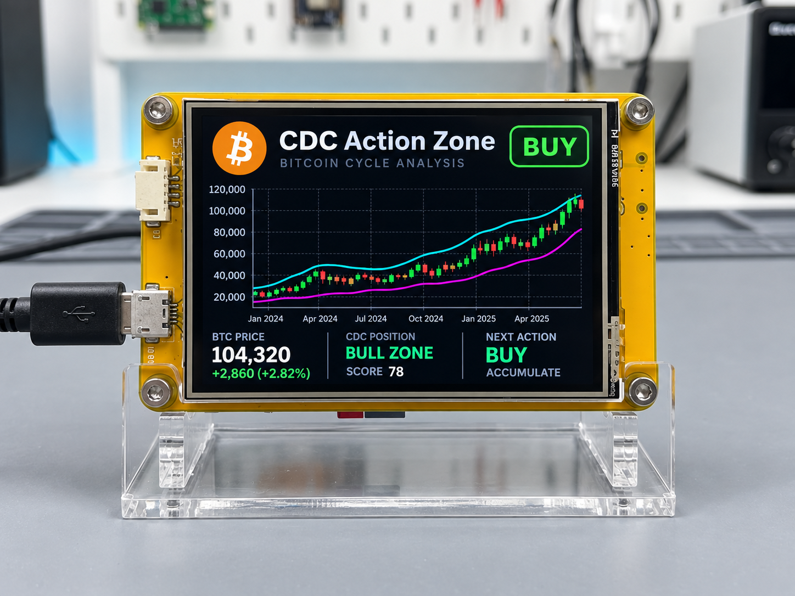
CDC Action Zone แสดงกราฟและสถานะ BUY
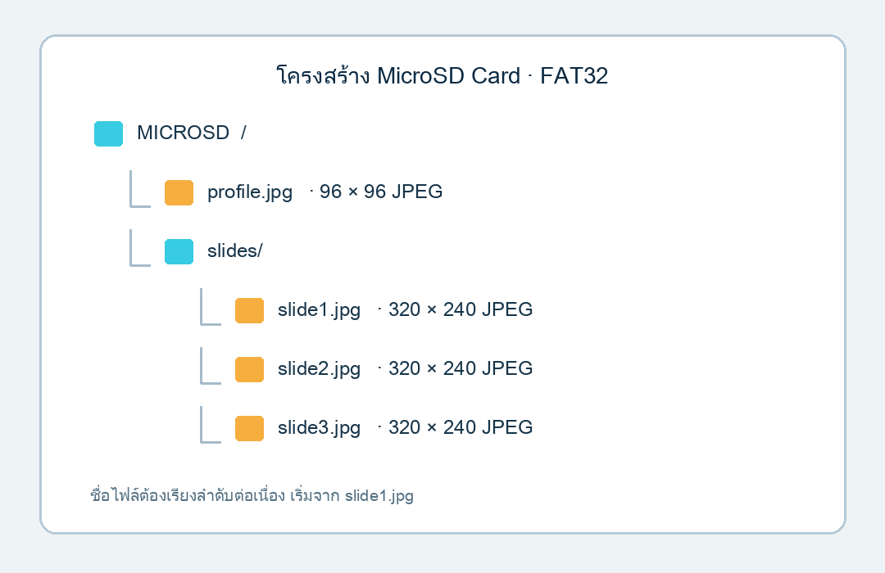
โครงสร้างไฟล์ Profile และ Slide บน MicroSD Card
16 · Troubleshooting
ปัญหาที่พบบ่อย
Arduino IDE ไม่พบ Port ของ ESP32
เปลี่ยนสาย USB ก่อน เพราะบางเส้นชาร์จได้อย่างเดียว จากนั้นตรวจ USB Driver เช่น CP210x หรือ CH340 และลองเสียบ Port อื่น
Compile แล้วขึ้นว่าไม่พบ WiFiManager.h
เปิด Library Manager ค้นหา WiFiManager ติดตั้งไลบรารี แล้วปิดและเปิด Arduino IDE ใหม่หนึ่งครั้ง
จอขาว จอดำ หรือภาพเป็นเส้น
ตรวจการตั้งค่า TFT_eSPI ให้ตรงรุ่นจอ ตรวจ Pin และไฟเลี้ยง หากมีไฟ Backlight แต่ไม่มีภาพ มักเกิดจาก Driver หรือ Pin configuration ไม่ตรง
ไม่พบเครือข่าย CryptoClock-Setup
WiFiManager จะเปิด AP เมื่อยังไม่มี Wi-Fi ที่เชื่อมได้ หากบอร์ดจำเครือข่ายเดิมอยู่ให้ล้างค่าด้วย wifiManager.resetSettings() ชั่วคราว แล้ว Upload ใหม่
เชื่อม Wi-Fi ไม่สำเร็จ
ตรวจว่าเป็นเครือข่าย 2.4 GHz รหัสผ่านถูกต้อง และหน้า Login ของ Wi-Fi ไม่ต้องยืนยันเพิ่มเติม บอร์ด ESP32 ทั่วไปไม่เชื่อม 5 GHz
ราคา Bitkub ไม่ขึ้นหรือขึ้น Waiting for Bitkub API
ตรวจอินเทอร์เน็ตและเปิด Serial Monitor ดู HTTP code จากนั้นลองเปิด URL Ticker V3 บนคอมพิวเตอร์ หาก API ไม่พร้อม โปรแกรมจะเก็บค่าล่าสุดที่เคยดึงสำเร็จไว้
หน้า CDC ขึ้น CDC data unavailable
ตรวจ Wi-Fi และเวลาจาก Bitkub server หน้า CDC ต้องเรียก TradingView History ซึ่งมีข้อมูลมากกว่า Ticker จึงอาจใช้เวลาหลายวินาที
SD Card อ่านได้แต่ภาพไม่ขึ้น
ใช้ JPEG แบบมาตรฐาน ไม่ใช่ Progressive JPEG ตั้งชื่อ profile.jpg และ /slides/slide1.jpg ด้วยตัวพิมพ์เล็ก และใช้ภาพ 320×240 สำหรับ Slide
ตัวหนังสือหรือหน้าจอกลับหัว
ปรับค่าใน tft.setRotation(1) เป็น 0, 2 หรือ 3 แล้ว Upload ใหม่จนตรงกับแนวติดตั้งจอ
17 · Practice
แบบฝึกหัดและเกณฑ์จบคาบ
ระดับเริ่มต้น
- เปลี่ยน KUB เป็นเหรียญ Bitkub คู่อื่น
- เปลี่ยนเวลาหน้า Coin เป็น 10 วินาที
- เพิ่มภาพ slide2.jpg ลง SD Card
ระดับท้าทาย
- แสดงเวลาที่อัปเดตราคาล่าสุด
- เปลี่ยน CDC จาก 4H เป็น 1H
- เพิ่มสถานะ Wi-Fi หลุดบนหน้า Coin
เกณฑ์ตรวจผลงาน
18 · Glossary
คำศัพท์สำคัญ
| คำศัพท์ | ความหมายแบบง่าย |
|---|---|
| ESP32 | ไมโครคอนโทรลเลอร์ที่มี Wi-Fi และ Bluetooth ในตัว |
| WiFiManager | ไลบรารีช่วยสร้างหน้าเลือกและบันทึก Wi-Fi โดยไม่ฝังรหัสผ่านในโค้ด |
| TFT | จอสีขนาดเล็กที่ ESP32 สั่งวาดด้วยพิกัด |
| struct | แบบฟอร์มข้อมูลที่รวมค่าหลายชนิดไว้เป็นหนึ่งรายการ |
| array | ชุดข้อมูลหลายรายการที่เรียกด้วยลำดับ index เริ่มจาก 0 |
| REST API | ช่องทางที่ ESP32 ส่ง HTTP GET ไปขอข้อมูลราคาจาก Bitkub |
| JSON | รูปแบบข้อความที่ Bitkub ใช้ส่งข้อมูล เช่น last และ percent_change |
| OHLC | ราคาเปิด สูงสุด ต่ำสุด และปิดของแท่งราคาแต่ละช่วงเวลา |
| EMA | ค่าเฉลี่ยเคลื่อนที่แบบให้น้ำหนักกับราคาล่าสุด ใช้เปรียบเทียบโซน CDC |
| millis() | เวลาที่ผ่านไปตั้งแต่บอร์ดเริ่มทำงาน หน่วยเป็นมิลลิวินาที |
| Compile | แปลงโค้ดที่เขียนให้เป็นโปรแกรมที่บอร์ดเข้าใจ |
| Upload | ส่งโปรแกรมจากคอมพิวเตอร์ลงบอร์ด ESP32 |
19 · Next lesson
เรียนต่อจากนี้ได้อย่างไร
เมื่อผู้เรียนเข้าใจระบบนี้แล้ว บทต่อไปควรเพิ่มความสามารถทีละเรื่อง โดยไม่ดึง MQTT, OTA และระบบขนาดใหญ่กลับมาพร้อมกัน
Touch Navigation
แตะซ้าย/ขวาเพื่อเปลี่ยนหน้าและเลือกเหรียญ โดยยังเก็บระบบสไลด์อัตโนมัติไว้
ตั้งค่าจาก SD
ย้าย Profile รายชื่อเหรียญ และเวลาแต่ละหน้าไปไว้ในไฟล์ JSON บน SD
เพิ่มความปลอดภัย HTTPS
ฝัง Root CA ของ Bitkub แทน setInsecure() สำหรับเวอร์ชันที่นำไปใช้งานจริง